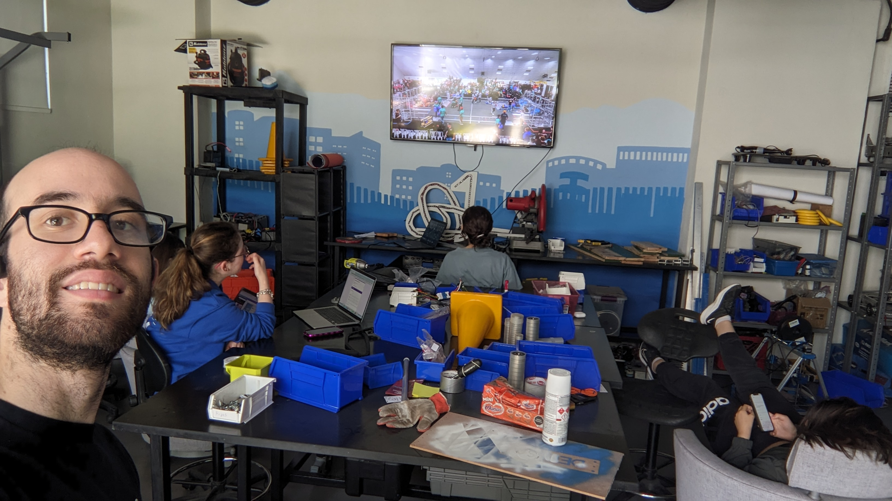

Iván Delfín García

Mentor del equípo de robotica Cyberius 6017
Actualmente actuó como mentor del equipo de robótica del equipo "Cyberius 6017" de Prepa Tec Santa Catarina. Trabajo como un mentor de programación y de analitica de datos en donde les enseño a los estudiantes sobre cómo programar sistemas del robot utilizando Java el cuál incluye módulos Swerve, giroscopios o switches de límites. Para el area de analitica de datos, les enseño como pueden aprovechar datos que pueden generar en competencias para luego hacer una toma de decisión cuando llegan las eliminatorias de aquella